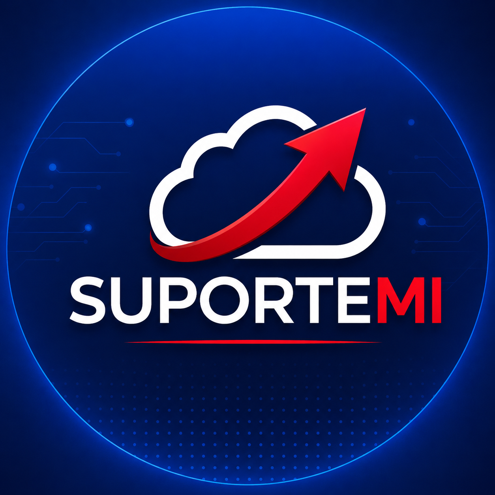

Consultor de TI Junior
- Atendimento a usuários, troubleshooting, manutenção, diagnóstico técnico e documentação de soluções.
- Diagnóstico de equipamentos, inventário de hardware e apoio em rotinas de manutenção.
- Administração de ambientes Windows e Linux, IIS, virtualização, redes e rotinas de backup.
- Administração básica de AWS e Google Workspace, além de hospedagem e DNS pela Locaweb.
- Participação no Projeto Jarvis, agente interno de IA integrado ao Google Drive para organizar documentos e apoiar processos.
- Apoio à presença digital da empresa e de clientes em canais como Instagram, LinkedIn, Google Business e Google Ads.